来源：https://vub1ul9ufi.feishu.cn/docx/QfpadWIPMoqdYxxyVEAcGjI6nqh
哈喽 大家好，我是谢不言，一个99年连续创业者，今年3月份我去杭州参加航海家大会，在会场门口见到亦仁老大，我上前打招呼，没想到他一眼就认出我来说：“不言，你们夜校做的挺好呀，我听说有的圈友跟着你都已经赚到几十万了。”
确实没想到老大也在关注我们做的青年夜校，这个项目始于生财风向标，兴于生财精华帖，可以说是没有生财有术，这个项目就不会在全国遍地开花，也不会让很多人从中赚到第一桶金，我从中也受益很多，半年多过去，是时候给圈友们汇报下工作了……
青年夜校起源于上海，是z府参与半公益的兴趣技能培训（瑜伽音乐美术舞蹈游泳等等）， 500 元 12 节课，主打一个性价比，目的是增加青年下班后的去处，丰富大家的业余生活，顺便让大家学习一些技能。
民间夜校的本质是整合市场资源，做的是一个中介撮合生意，链接兴趣培训需求方和供给方，赚取课程培训费和机构的返佣，一般500元的课程，我们抽取40%--50%的课程佣金，另外学员如若报名千元以上的正价课，我们还要继续抽取10%-20%后续佣金。
有了流量和信任关系之后，我们自己会开自营课（新媒体运营、PS、PR剪辑课、塔罗、中医养生等等）
还可以衍生嫁接其他项目，比如同城相亲，同城医美，变现模式取决于操盘手的商业认知，欢迎有项目资源或者想加入夜校的朋友们链接
2023年10月30日中午，无意间刷风向标看到圈友发的信息，介绍上海夜校，北京夜校，他们是怎么做的？我感觉这个是可行的。
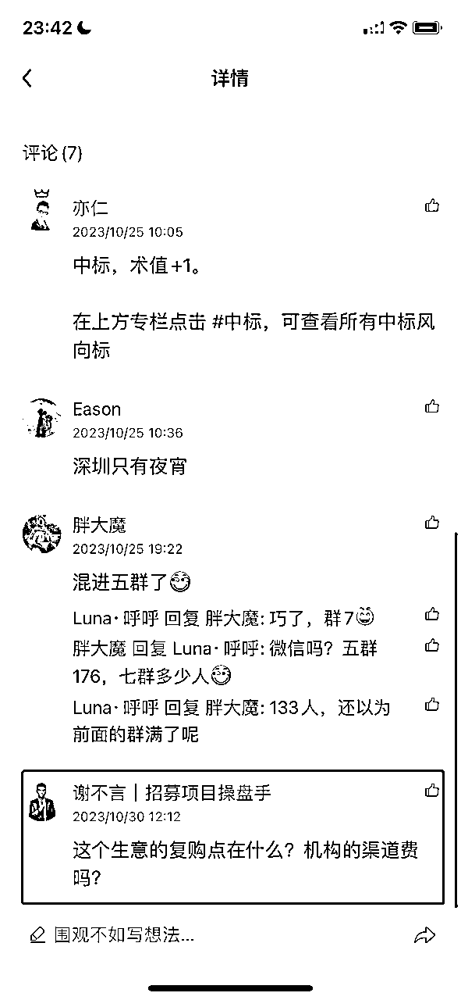
第二天一早上班，我就安排新媒体运营小姐姐开干，一周时间就拿到了结果。
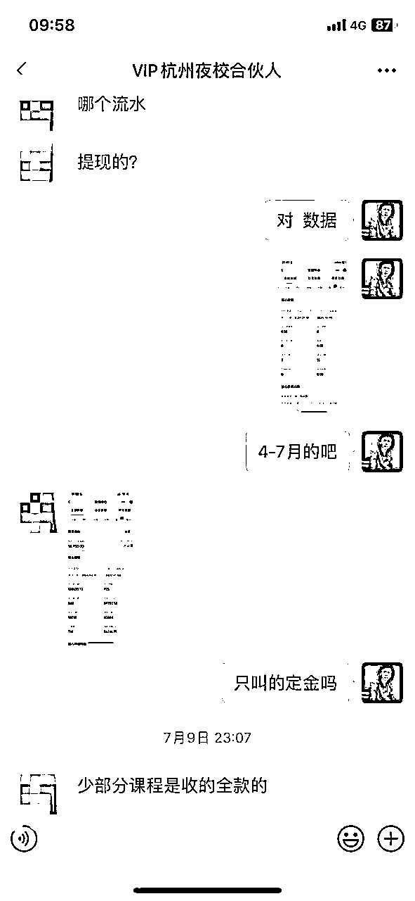
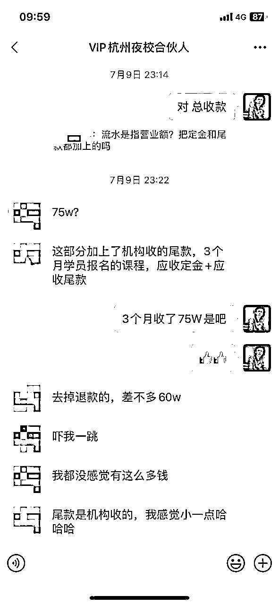
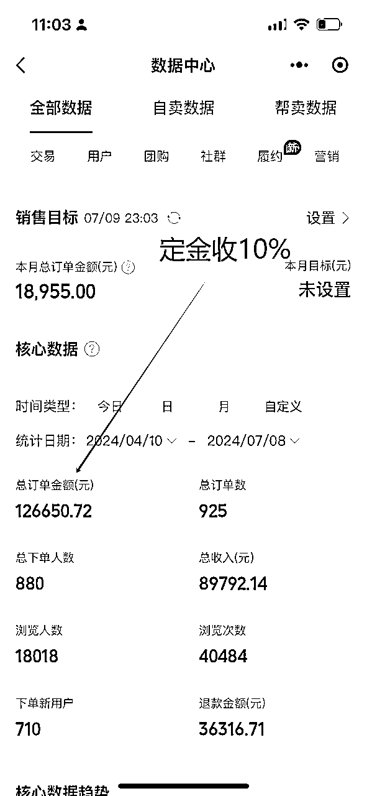
直接帮助杭州圈友兼城市合伙人：3个月收款75w，利润30w，数据和聊天内容经圈友本人授权公开
（数据说明：广州、苏州、上海、郑州、深圳各地圈友，营收保守各突破50W；徐州、临沂、昆明、大连等10余地圈友营收各突破10W，以上数据为保守预估，只少不多，欢迎来辩)
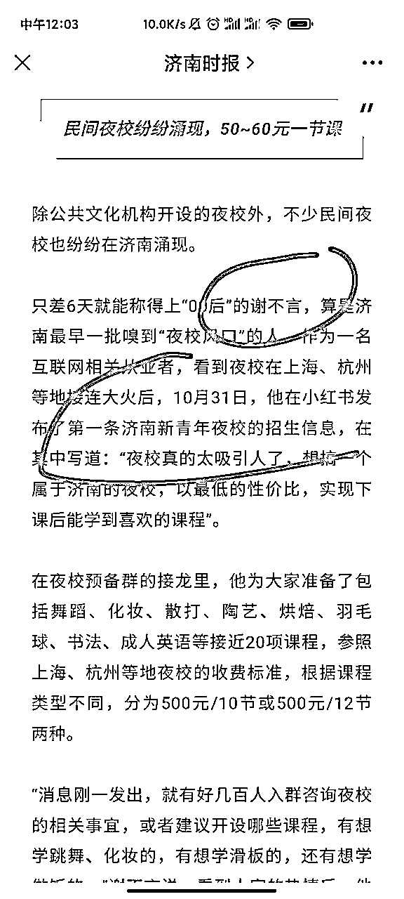
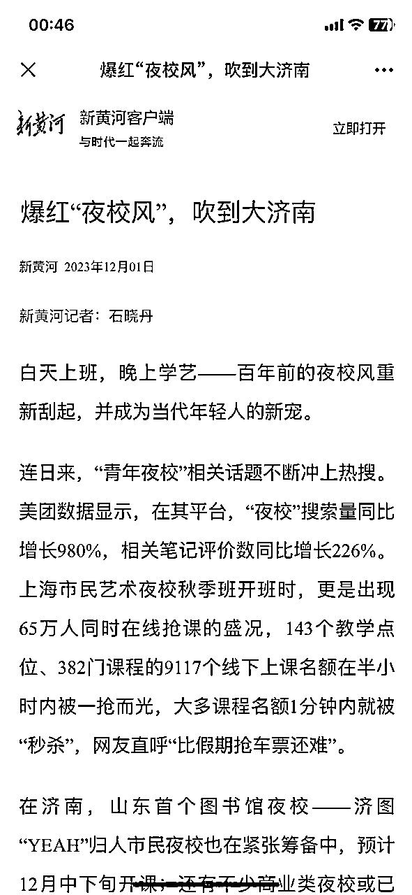
（第一次被官方媒体报道、直接为我带来6位数的济南企业代运营订单）
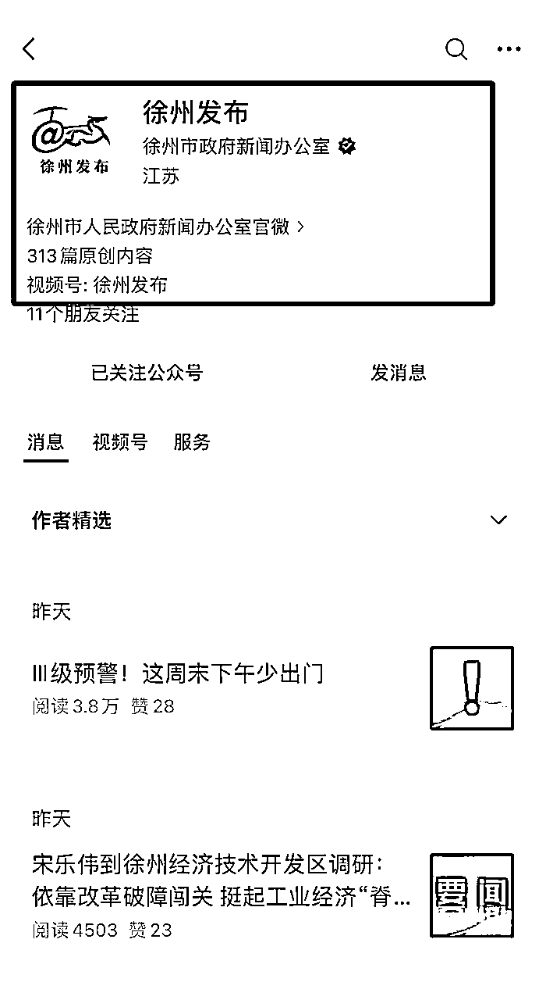
（徐州圈友兼城市合伙人接受市团委书记参观、并登报官方媒体）
2023年生财有术山东圈友年会嘉宾刘家齐说：”面对红利，要“执行力”和“资源”双重尊重“，这句话让我共鸣已久。
当我晚上刷到风向标的时候，思索片刻，觉得商业模式和利润率可行，第2天便着手立马去干，一天便能加满一个微信群，一周之内垄断了整个济南城。
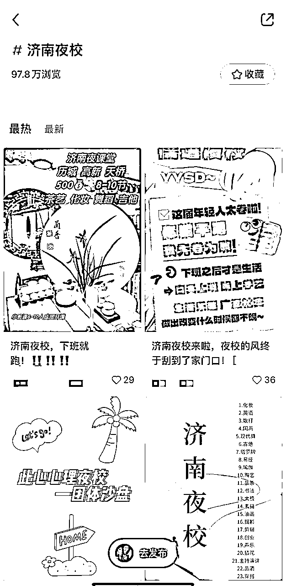
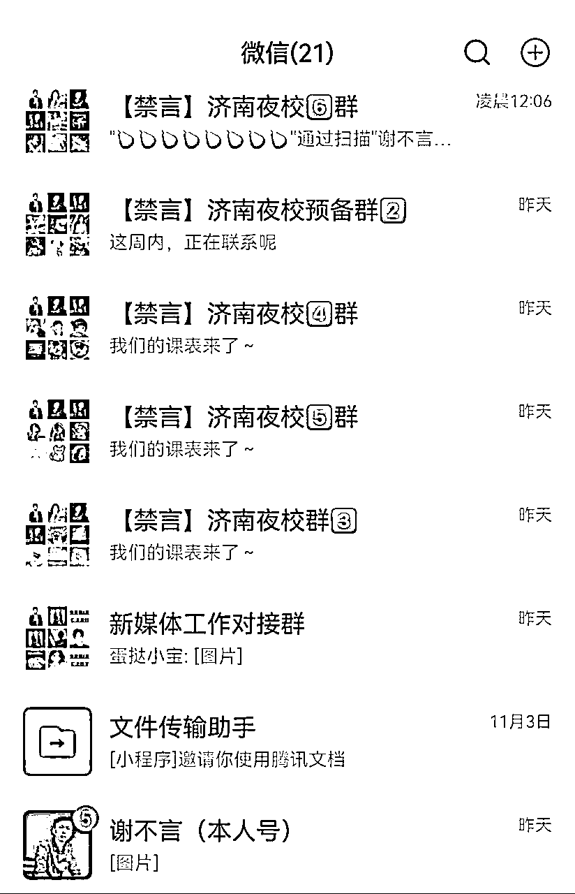
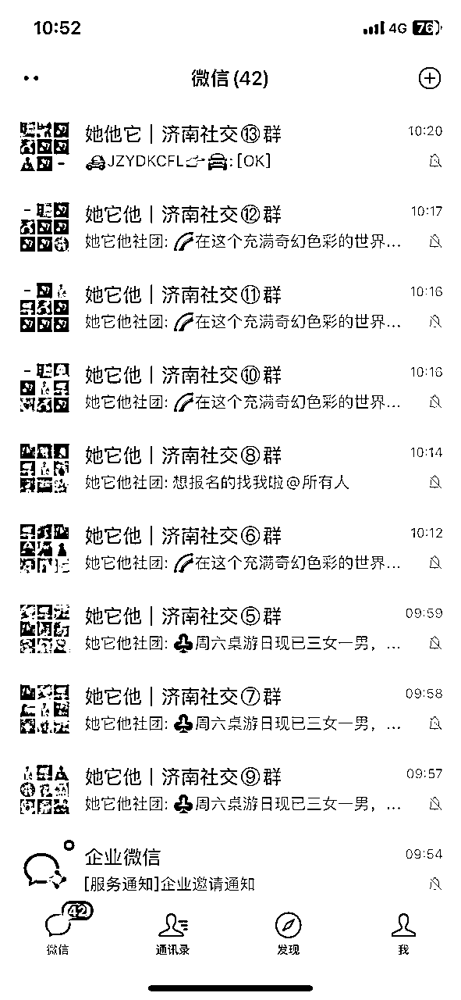
《飞驰人生2》中有句台词：“我努力过无数次了，但是机会只存在于其中的一两次”
对于我们创业者来说，只要我们不下牌桌，身边总会出现无数个机会，但是真正属于你且适配的只有那么一两个，所以对于机会来临时，一定要勇于抓住、敢于下重注。
当时夜校项目是由北京上海两个团队对标的，亲身实践他们的方法后，感觉变现效率非常低，那我们只能倒逼着自己去创新，后来才探索把快团团当作上架课程的平台，提高了n倍的变现效率。
当做一个项目时，我们一定要一遍一遍的打磨迭代项目流程，提高项目变现效率……
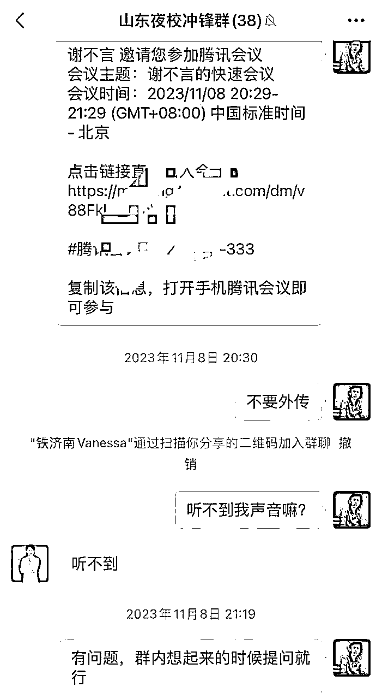
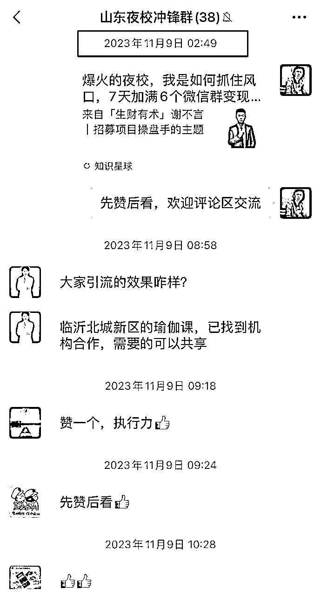
实践一周拿到结果后，我第一时间在生财有术山东圈友群内分享信息
公益进行腾讯会议讲解并答疑，凌晨2点整理成文章分享星球
事实证明：市场对于先知先觉者的回报是巨大的
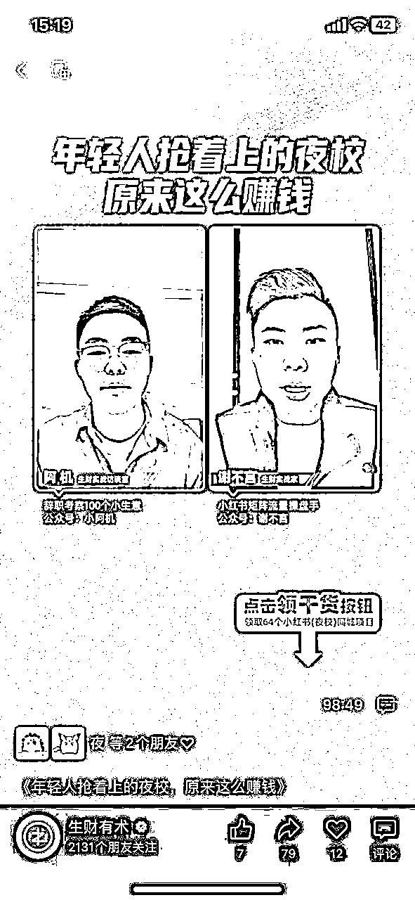
受邀参加生财实战家直播连麦分享
我们做的不是单纯一次性的夜校生意，而是在经营人群，经营人心，夜校只是这一部分年轻群体的一个变现项目之一，他们还有社交娱乐，技能提升，认知提升，副业赚钱等等需求
我们可以围绕他的需求去开展产品，比如说可以做线下轰趴、狼人杀、财富流游戏等线下活动，也可以线上开展自营的视频剪辑课，或者是新媒体运营课，甚至后面你还可以给大家引荐靠谱的副业项目。
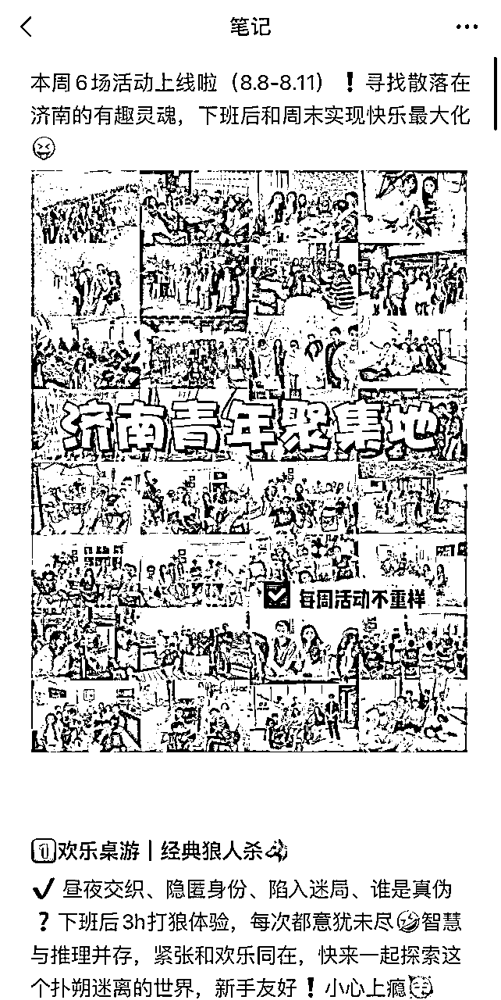
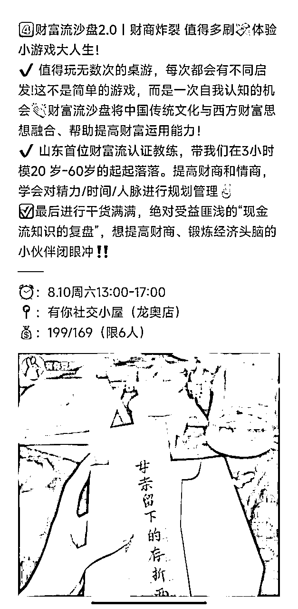
当你在城市中有了一定的流量规模，那商家就会自然而然的找到你去谈合作，当你帮商家赚到钱时，他就会非常的信任你，这时候可以顺势谈一下小红书的代运营和陪跑，随着你的能力和影响力的提升，慢慢的可以从c端人群过渡到小B实体店，再过渡到中小企业。
我是谢不言，一名连续创业者，在夜校项目上有幸成为第一个吃螃蟹的人，拿到了一些成果，感谢感恩生财有术提供的平台，能够让我们一线实战创业者被更多人看见，欢迎圈友链接讨论 okk296，一定知无不言、言无不尽~